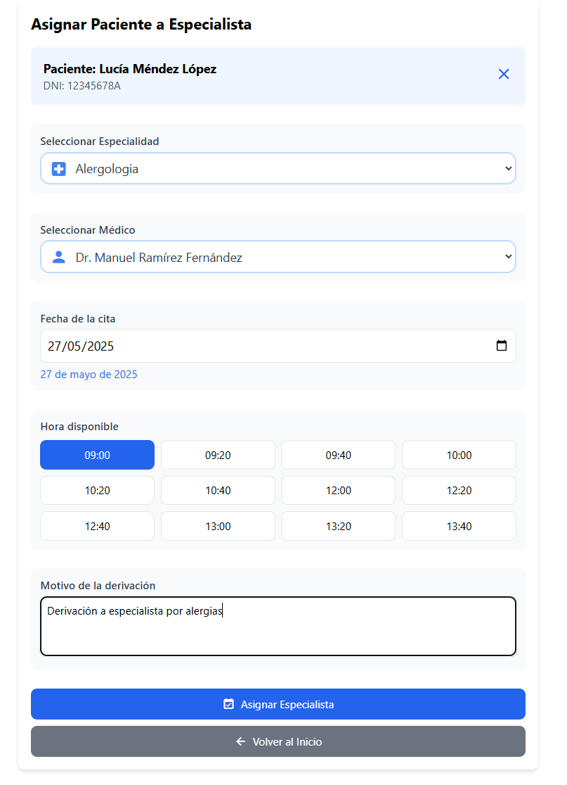

Descripción
Los médicos pueden seleccionar una especialidad, un especialista, una fecha y hora, y agregar un motivo para derivar al paciente.
Flujo de derivación
- Buscar paciente y especialidad → validar permisos del médico.
- Comprobar disponibilidad del especialista y solapamientos.
- Crear derivación y (opcional) generar nueva cita con el especialista.
- Notificar a paciente y especialista por email.
- Auditar la acción (quién deriva, a quién y cuándo).
API principal
- POST /api/derivaciones: crea la derivación (pacienteId, especialistaId, fecha, motivo).
- GET /api/especialistas?especialidad=...: lista especialistas disponibles.
- GET /api/especialistas/{id}/disponibilidad?fecha=...: huecos libres.
Validaciones y reglas
- Permisos: el médico debe estar asignado al paciente
- Fecha futura y sin solapes con el especialista
- Motivo 5–280 caracteres
- Opcional: crear cita con el especialista y notificar por email
Estados y notificaciones
- Derivación: CREADA → (OPCIONAL) CITA PROGRAMADA con especialista
- Emails: paciente y especialista reciben confirmación y detalles
Errores comunes
- 403 sin permiso | 404 especialista/paciente no existe | 409 solape
Ejemplo JSON
{
"pacienteId": "p1",
"especialistaId": "m2",
"fecha": "2025-05-22",
"hora": "11:00",
"motivo": "Valoración de traumatología",
"crearCita": true
}
Capturas de pantalla

Formulario para asignar un paciente a un especialista.
Rutas relacionadas
- Frontend: `/asignar-especialista` (Angular Router)
- Backend: `/api/especialistas` (Spring Boot)